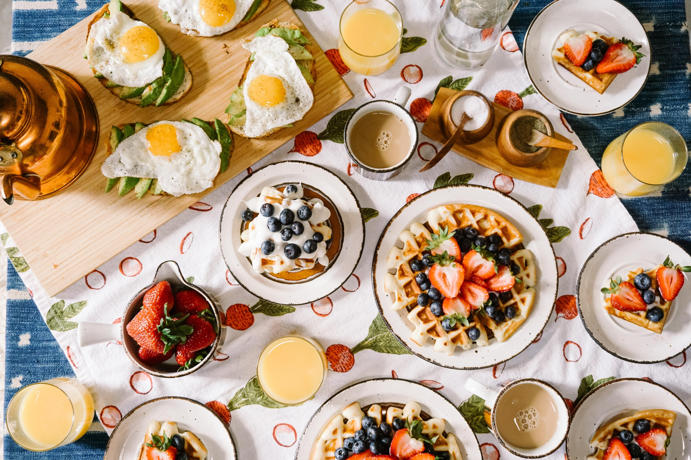
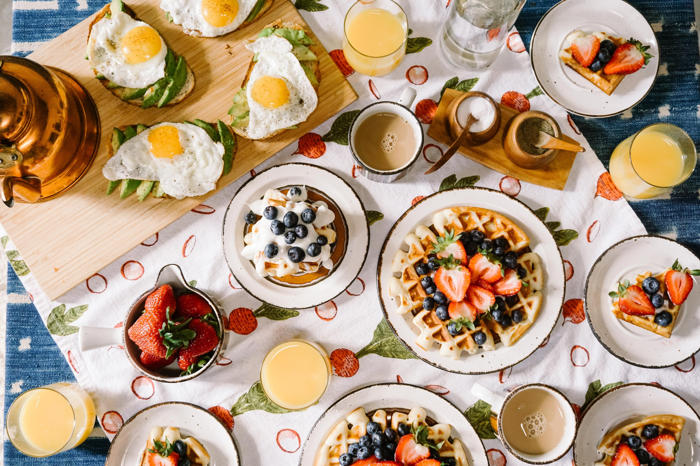

Inspire-se, cozinhe com paixão e saboreie momentos inesquecíveis à mesa.
Sobre Nós
Olá! Somos Amanda e Pedro, e estamos empolgados em apresentar nosso trabalho sobre o "Delícias à Mesa".
Ao explorar esse site incrível, descobrimos um universo gastronômico repleto de receitas deliciosas, dicas
úteis e inspiração culinária. O "Delícias à Mesa" é um lugar onde chefs experientes e cozinheiros iniciantes podem se unir em sua paixão pela comida.
Uma das coisas que nos encantou foi a variedade de receitas disponíveis. Desde pratos tradicionais e reconfortantes até criações mais inovadoras, há opções para todos os gostos e ocasiões. Cada receita é cuidadosamente selecionada e testada, garantindo que os resultados sejam sempre saborosos e dignos de serem compartilhados.
Além das receitas, o "Delícias à Mesa" também oferece dicas úteis para aprimorar as habilidades culinárias. Desde técnicas de preparo até sugestões de combinação de sabores, o site nos convida a explorar e experimentar na cozinha. É um ambiente acolhedor e inclusivo, onde todos são incentivados a mergulhar na arte da culinária e descobrir novas possibilidades.
Em suma, o "Delícias à Mesa" é um espaço gastronômico inspirador que nos convida a explorar, criar e compartilhar nossa paixão pela culinária. Esperamos que nossa apresentação tenha despertado seu interesse em se juntar a nós nessa jornada deliciosa com o "Delícias à Mesa"!